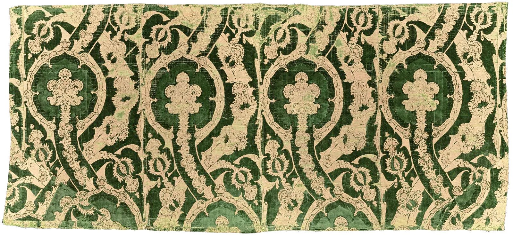

Velluto con motivo a melagrana
Manifattura genovese, fine del XV secolo
Teletta con grande motivo a melagrana entro losanghe; cimose originali conservate su un lato
- Identificativo
- OGG-0008
- Tipologia
- Tessile
- Ambito
- Manifattura genovese
- Datazione
- fine del XV secolo
- Luogo
- Genova
- Materia
- Velluto di seta cesellato
- Misure
- cm 120 x 56